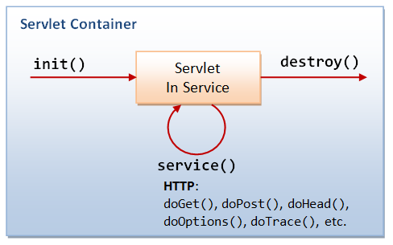
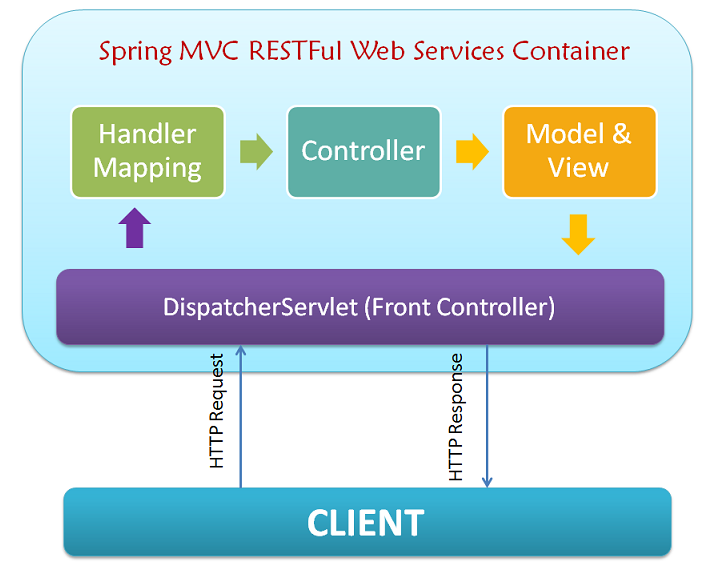

Bienvenue !
Pierre-Julien VILLOUD

Introduction
Jusqu'à présent, nous avons utilisé les fonctionalités standards de Java, contenues dans Java SE. Pour la réalisation de servlets et la prise en charge de JSP, nous allons avoir besoin des fonctionnalités de Java EE qui demande en plus de la JVM un serveur d'application comme Tomcat.
- Les servlets avec Java EE
- Les servlets avec Spring
Les servlets avec Java EE
La servlet est un programme Java qui se situe et s'exécute sur un serveur d'application à partir d'une demande d'affichage d'une page HTML.

Il y a également des mécanismes de passage de données entre la page HTML et la servlet pour construire des applications dynamiques.
La classe HttpServlet
Pour développer une servlet, il faudra étendre la classe
javax.servlet.http.HttpServlet.
- GET
- POST
- PUT
- PATCH
- DELETE
- HEAD, OPTIONS, CONNECT, TRACE...
public abstract class HttpSerlet extends GenericServlet {
protected void doGet(...) { ... }
protected void doPost(...) { ... }
protected void doPut(...) { ... }
/*Pas de doPatch() ! Mais vous pouvez l'ajouter vous-même...*/
protected void doDelete(...) { ... }
protected void doHead(...) { ... }
protected void doOptions(...) { ... }
protected void doTrace(...) { ... }
//Analyse la requête d'entrée et appelle la bonne méthode doX()
public void service(...) {...}
}
Chaque méthode du standard Http (presque...) a son implémentation dans la classe
HttpServlet.
Servlet avec doGet()
Commençons par une servlet simple répondant à une requête
GET classique
public class HelloServlet extends HttpServlet {
@Override
protected void doGet(HttpServletRequest req,
HttpServletResponse resp)
throws ServletException, IOException {
resp.setContentType("text/html");
PrintWriter printWriter = resp.getWriter();
printWriter.println("<html><head>");
printWriter.println("<title>Hello Servet</title>");
printWriter.println("</head><body>");
printWriter.println("<h1>Hello !</h1>");
printWriter.println("</body></html>");
printWriter.close();
}
}<?xml version="1.0" encoding="ISO-8859-1"?>
<web-app version="3.0"
xmlns="http://java.sun.com/xml/ns/javaee"
xmlns:xsi="http://www.w3.org/2001/XMLSchema-instance"
xsi:schemaLocation="http://java.sun.com/xml/ns/javaee
http://java.sun.com/xml/ns/javaee/web-app_3_0.xsd">
<servlet>
<servlet-name>HelloServlet</servlet-name>
<servlet-class>HelloServlet</servlet-class>
</servlet>
<servlet-mapping>
<servlet-name>HelloServlet</servlet-name>
<url-pattern>/sayhello</url-pattern>
</servlet-mapping>
</web-app>
Une fois l'application déployée dans
et le serveur lancé, on verra Hello ! affiché lorsqu'on consulte l'URL
http://localhost:8080/sayhello.
Le Deployment descriptor web.xml
Le fichier
web.xml définir le mapping entre les URL et les servlets. Le serveur web gèer chaque requête en la confrontant au mapping de ce fichier pour appeler la bonne méthode de la bonne classe.
<servlet>
<servlet-name>hello</servlet-name>
<servlet-class>HelloServlet</servlet-class>
<init-param>
<param-name>nom</param-name>
<param-value>Bob</param-value>
</init-param>
<servlet-mapping>
<servlet-name>hello</servlet-name>
<url-pattern>/hello/*</url-pattern>
</servlet-mapping>
</servlet>
Tous les URL sous la forme
http://locahost:8080/hello/* seront redirigés vers la servlet HelloServlet. On peut récupérer le paramètre nom avec String nomDefault = getServletConfig().getInitParameter("nom");
Servlet avec doGet() et des paramètres
Pour la deuxième servlet, on ajoute la récupération de paramètres dans l'URL
http://localhost:8080?nom=IPI ou le paramètre nom vaut IPI.
public class HelloServlet extends HttpServlet {
@Override
protected void doGet(HttpServletRequest req,
HttpServletResponse resp)
throws ServletException, IOException {
resp.setContentType("text/html");
String nom = req.getParameter("nom");
PrintWriter printWriter = resp.getWriter();
printWriter.println("<html><head>");
printWriter.println("<title>Hello Servet</title>");
printWriter.println("</head><body>");
printWriter.println("<h1>Hello " + nom + "!</h1>");
printWriter.println("</body></html>");
printWriter.close();
}
}<?xml version="1.0" encoding="ISO-8859-1"?>
<web-app version="3.0"
xmlns="http://java.sun.com/xml/ns/javaee"
xmlns:xsi="http://www.w3.org/2001/XMLSchema-instance"
xsi:schemaLocation="http://java.sun.com/xml/ns/javaee
http://java.sun.com/xml/ns/javaee/web-app_3_0.xsd">
<servlet>
<servlet-name>HelloServlet</servlet-name>
<servlet-class>HelloServlet</servlet-class>
</servlet>
<servlet-mapping>
<servlet-name>HelloServlet</servlet-name>
<url-pattern>/sayhello</url-pattern>
</servlet-mapping>
</web-app>
Une fois l'application déployée dans
et le serveur lancé, on verra Hello IPI! affiché lorsqu'on consulte l'URL
http://localhost:8080/sayhello?nom=IPI.
Servlet avec doPost()
Lorsqu'on soumet les données d'un formulaire, on utilise généralement la méthode
POST.
public class HelloServlet extends HttpServlet { @Override protected void doPost(HttpServletRequest req, HttpServletResponse resp) throws ServletException, IOException { //Même code que pour doGet } }<!DOCTYPE html> <html lang="en"><!--index.html--> <head><meta charset="UTF-8"><title>Bonjour</title></head> <body> <form action="http://localhost:8080/sayhello" method="post"> Votre nom : <input type="text" name="nom" value=""> <input type="submit" value="OK"> </form> </body></html>
<?xml version="1.0" encoding="ISO-8859-1"?>
<web-app version="3.0"
xmlns="http://java.sun.com/xml/ns/javaee"
xmlns:xsi="http://www.w3.org/2001/XMLSchema-instance"
xsi:schemaLocation="http://java.sun.com/xml/ns/javaee
http://java.sun.com/xml/ns/javaee/web-app_3_0.xsd">
<servlet>
<servlet-name>HelloServlet</servlet-name>
<servlet-class>HelloServlet</servlet-class>
</servlet>
<servlet-mapping>
<servlet-name>HelloServlet</servlet-name>
<url-pattern>/sayhello</url-pattern>
</servlet-mapping>
</web-app>
Une fois l'application déployée dans
ROOT
index.html
et le serveur lancé, lorsqu'on consultera
http://localhost:8080/index.html on verra le formulaire qui une fois validé affichera Hello nomFormulaire !.
Cycle de vie d'une servlet
La méthode
init() est appelée une fois lors de la première requête sur la servlet. On peut appeler la méthode destroy() si l'on souhaite détruire la servlet.

Ces méthodes peuvent être utiles pour gérer des opérations de connexion/déconnexion à une base de données, d'ouverture/fermeture de fichier...
Les servlets avec Spring
La configuration des servlets classiques n'est pas très pratique car il est nécessaire de passer par le fichier
web.xml. De plus, lorsqu'on a deux requêtes sur le même URL avec la même méthode, on n'est obligé de passer par la même méhode doX().

Le déploiement doit être géré également à la main (ou via l'IDE). Voyons ce que Spring et Spring Boot permettent de faire.
Contrôleurs Spring
Une classe peut être définie en tant que Contrôleur Spring avec l'annotation
@RestController.
@RestController
@RequestMapping(value = "/sayhello")
public class HelloController {
//...
}
Un chemin de base pour ce contrôleur peut être défini avec l'annotation
@RequestMapping. Ce contrôleur gérera toutes les requêtes commençant par /vehicules
Mapping de requête
Dans le contrôleur, il est alors possible de définir des mappings permettant d'intercepter les requêtes HTTP en fonction de leur chemin et de leurs paramètres avec l'annotation
@RequestMapping.
@RequestMapping(
method = RequestMethod.POST, //Méthode HTTP : GET/POST/PATCH/PUT/DELETE
consumes = "application/json", //Type MIME des données passées avec la requête : JSON, XML, Texte...
produces = "application/json", //Type MIME des données fournies dans la réponse
value = "/vehicules" //Chemin du mapping (concaténé avec l'éventuel chemin présent au niveau du contrôleur)
)
public ...
Une requête peut ne pas fournir de données en entrée. Et une réponse peut ne pas fournir non plus de données en sortie.
Récupération des QueryParams
Les
QueryParams sont les paramètres qui sont passés dans l'url. Par exemple http://localhost:8080?page=1&size=15. Il y a deux paramètres : page valorisé à 1 et size valorisé à 15. Pour les récupérer, on utilise l'annotation @RequestParam.
@RequestMapping(...)
public String exemple(
@RequestParam("page") Integer page,
@RequestParam("size") Integer size)
{
...
}
Il est préférable d'utiliser ce système lorsqu'il n'y a pas trop de paramètres.
Paramètres dans l'URL
Une syntaxe fréquente dans une application web consiste à intégrer des paramètres directement dans l'URL comme par exemple
http://localhost:8080/hello/1
@RequestMapping(value = "/{name}", ...)
public String hello(
@PathVariable (value = "name") String name)
{
...
}
Cette notation est très utilisée dans les applications REST.
Corps de la requête
Lorsqu'on veut envoyer des données plus complexes, comme à la création d'un objet par exemple, on utilise le corps de la requête avec l'annotation
@RequestBody, cela correspond au champ data de la requête.
@RequestMapping(...)
public String createVehicule (
@RequestBody Vehicule vehicule)
{
...
}
On envoie dans ce champ des données structuées en JSON ou en XML. Les données serialisées doivent correspondre à l'entité dans laquelle on place l'objet. Sinon, les données seront stockées dans une
Map.